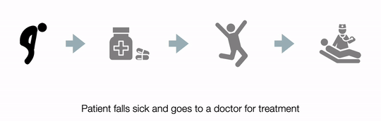

THE PROBLEM
Tuberculosis is one of the top 10 killers in the world. India follows the internationally recommended
strategy for TB treatment called Directly Observed Treatment Short Course (DOTS). As part of this strategy,
patients' are provided free medication and monitoring of intake.

DOTS presents difficulties for adherence since treatment is long, side effects are normal, and patients, as a
rule, feel better before treatment is complete. Non-adherence causes the disease to become drug-resistant,
causing drawn-out sickness, and often resulting in death.
THE SOLUTION
The solution catered to two aspects: monitoring and awareness. Monitoring was done through specially designed blister packets that incentivized the patients to record their intake through Interactive Voice Response. Awareness was spread in the form of Outbound Automated Calls.
THE IMPACT
The Govt. of Assam implemented the solution in 3 rural districts. The solution coordinates the DOTS treatment between the patients and the Health workers. Currently, Swasthyaa (meaning 'Health' in Hindi) has 2000+ presumptive patients, and 300+ TB positive patients enrolled.

We studied our users on their perception, preferences, and learnability of IVR solutions. We documented the study as a short paper and it was published in the Interact 2019 Conference Proceedings. We were also invited to present at the IndiaHCI'19 "Out of India" exhibition.
DURATION
August 2018 - May 2019
TEAM
Prof. Keyur Sorathia
Shimmila Bhowmick
Priyanka Rabha
Ajoy Baishya
Arpit Mathur
ROLE
Responsible for the Research, Conceptualization, and Testing of the Interactive Voice Response feature. Coordinated with Health workers in Assam to understand requirements and implement solutions to fulfill their needs. The first author for the documentation of short paper.
DOI
https://link.springer.com/chapter/10.1007/978-3-030-29387-1_2